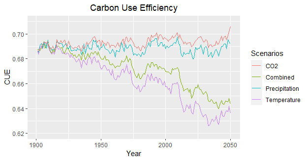

NBA Regular Season Wins 1990-2020
Here I animated a graph in RStudio displaying the total amount of regular season wins for all NBA teams between 1990 and 2020. Aside from ggplot2, I used library(gganimate) to transition across the years, library("viridis") to define the fill color of the bars, and library(gifski) to convert the sequence of images into a GIF animation.
Pre-All Star Weekend NBA Team Efficiency Stats
Offensive and defensive ratings are advanced basketball statistics for measuring individual and team impact on the court. While having a high offensive rating is valuable, a high defensive rating is an indicator of poor defensive effort. Here I evaluated the offensive and defensive ratings of NBA teams before the All Star Weekend, a point where teams usually reflect on their standings and make decisions based on their updated expectations for the rest of the season.
To produce this figure, I first scraped data from the website Basketball Reference using Beautiful Soup, a webscraping package for Python. I filtered individual player data by team and number of games played, excluding those that had participated in less than 30 regular season games to remove outliers. The resulting dataframe was exported into a CSV file for plotting in RStudio. Looking at the summary() function in R, I decided to create a filter to identify the best well-balanced teams, in this case those above the 3rd Quartile in offensive rating, and in the 1st Quartile in defensive rating. Next, I visualized this filter by applying geom_mark_ellipse(), a function for annotating areas with elipses in ggplot2. The resulting plot indicates that Cleveland Cavaliers, Miami Heat, and Memphis Grizzlies are the best well-balanced teams at this point in the season.
Finally, I tidied up the plot by replacing the previous best defense and offense filter for a simple ellipse using the function geom_ellipse().
iNaturalist Observations at Höjeåvägens Fågelskådartorn, Lund
Höjeåvägens Fågelskådartorn is a small bird watching area on the outskirts of Lund. I plotted this map of the area using the basemap extension of Matplotlib in Python. I collected bird observations data at Lunds Kommun from the citizen science platform iNaturalist, and filtered the data points to keep the ones whose coordinates belonged to the site. Then, I searched for the EPSG coordinates of the location, assigned projection = "mill" to use the Miller Cylindrical Projection, and used plot_map(service='World_Topo_Map') to set a background image from ArcGIS.

Additionally, I made a bar plot with the total number of observed birds by taxon family, for which I used the function value_counts() to determine how many individuals belonged to each family in my dataset. As expected for a freshwater site, most birds in the sample are aquatic species, mainly dominated by the family Anatidae to which ducks, swans, and geese belong.
Vegetation Dynamics in LPJ-GUESS
Uncertainty and sensitivity analysis
The following figures were produced in Python using the data visualization libraries Matplotlib and Seaborn. A series of 200 simulation runs using changing sets of randomly generated parameters were produced with the Monte Carlo method to find which parameters the simulation is most sensitive to, and to determine via optimization which set of parameters gives the minimum RMSE. The range of the simulation runs displayed in light blue on Figure 1 was created using the matplotlib.pyplot.fill_between() function after determining the maximum and minimum values of the total set of simulations.

Figure 1: The simulations tend to overestimate the observed values during the winter. Negative values obtained during summer months indicate an uptake of C, while positive values during winter months indicate a release of C. The gap between observations and simulations in the transition from the summer to the winter months may be due to misreading errors from the eddy-covariance flux towers during unstable autumn weather.
Figure 2: The cumulative change in vegetation C stocks, measured by the net primary production (NPP), experiences a linear increase over time. Uncertainty at the beginning of the simulation is very low and also experiences a gradual increase.

Figure 3: The cumulative change in ecosystem C stocks, measured by the NEE, remains stable throughout the simulation. Meanwhile, uncertainty progressively increases over time.
Siberian boreal forest dynamics
The following figures were produced using the data visualization package ggplot2 in RStudio. Carbon use efficiency (CUE) is a metric for calculating the percentage of gained carbon from photosynthesis that is issued to plant biomass production (Bradford & Crowther, 2013).
Following IPCC Atlas projections for high emission scenario RCP8.5, a series of scenarios recreating changes in temperature, precipitation, and atmospheric CO2 concentrations were simulated to determine which factors are responsible for most of the change.

Figure 1: CUE decreases in scenarios where temperature increases.
Figure 2: Increase in temperature leads to ecological succession from grasses (C3G) to boreal needle-leaved summer-green trees (BNS).
We can conclude that increasing temperature produces environmental conditions favorable for BNS trees, changing from a grass-dominated biome to a boreal forest. Since trees have more living tissue, they have higher respiration rates which cause the decline in CUE.
References:
Bradford, M. A., & Crowther, T. W. (2013). Carbon use efficiency and storage in terrestrial ecosystems. The New Phytologist, 199(1), 7–9.